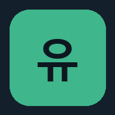

유비텍 작업일지
작업일지를 여는 중…
작업일지 열기
- 위 초록 버튼을 누르거나, 크롬 메뉴 ⋮ → 설치 및 바로가기 만들기 → 설치 (바로가기 말고 설치를 고르세요)
- 설치하면 홈 화면에 초록색 유 아이콘(유비텍)이 생깁니다
- 갤러리나 카톡에서 캡처를 열고 공유 → 유비텍을 누르면 글자를 읽어 작업일지 등록 화면이 열립니다 (처음엔 공유 목록 뒤쪽에 있을 수 있어요)
카톡 캡처 읽는 중
잠시만 기다려 주세요 (한 장에 5~10초)
작업일지 열기